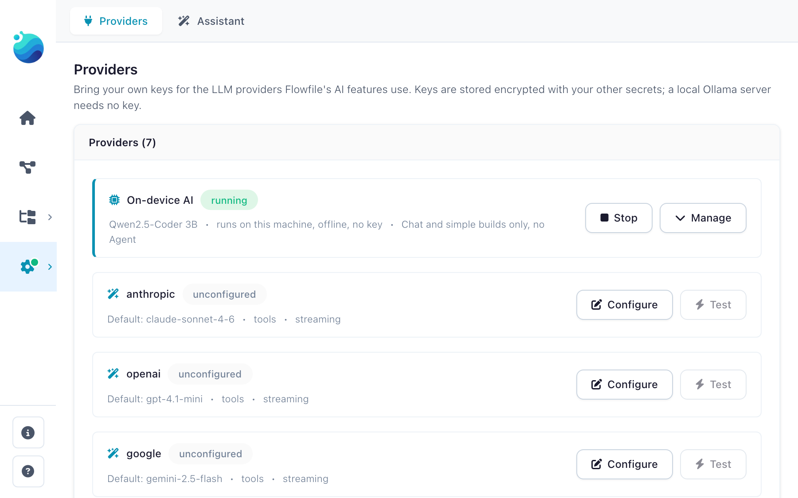
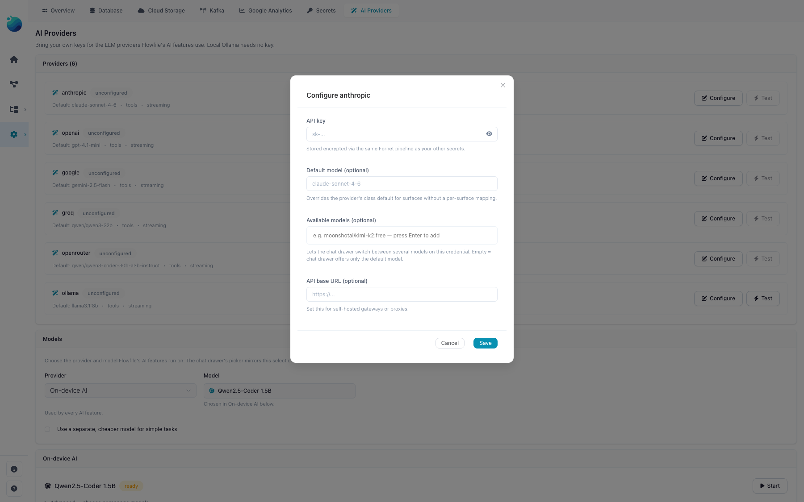
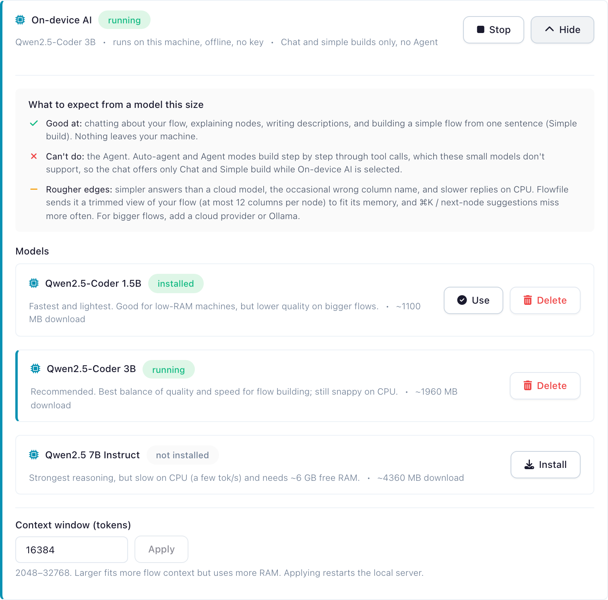

Provider Setup (BYOK)
The AI Assistant runs against a built-in on-device model or one of six LLM providers: Anthropic, OpenAI, Google, Groq, OpenRouter, and a local Ollama server. For the hosted providers you bring your own API key; Flowfile encrypts it at rest with Fernet (using FLOWFILE_MASTER_KEY / master_key.txt), the same scheme that protects your other secrets. Two options work offline: the on-device model (no key or account) and Ollama (a server you run).
Not in Flowfile Lite
The AI Assistant (and BYOK provider setup) requires the full desktop/server build, not the browser-only Flowfile Lite edition.
Supported providers
Default models below reflect the provider classes as of 2026-07.
| Provider | Default model | Tools | Streaming | Key env var | Notes |
|---|---|---|---|---|---|
| Anthropic | claude-sonnet-4-6 |
✓ | ✓ | ANTHROPIC_API_KEY |
Haiku 4.5 is the default for fast surfaces (Cmd+K, ghost-node, autocomplete); Opus 4.7 for agent_complex. |
| OpenAI | gpt-4.1-mini |
✓ | ✓ | OPENAI_API_KEY |
Mini tier for the cheap surfaces; full gpt-4.1 for explain / agent_complex / docgen. Strict structured outputs supported via litellm. |
| Google (Gemini) | gemini-2.5-flash |
✓ | ✓ | GEMINI_API_KEY or GOOGLE_API_KEY |
Free tier ~250–1000 req/day, no card required. Pro for agent_complex. |
| Groq | qwen/qwen3-32b |
✓ | ✓ | GROQ_API_KEY |
Fast inference; free tier is ~30 RPM. |
| OpenRouter | qwen/qwen3-coder-30b-a3b-instruct |
✓ | ✓ | OPENROUTER_API_KEY |
One key routing to many hosted models. The agent_staged default is meta-llama/llama-3.3-70b-instruct (free tier). |
| Ollama | llama3.1:8b |
✓ (model-dependent) | ✓ | (none — local) | Self-hosted; talks to your local Ollama server (default http://localhost:11434). Tool-use works on Llama 3.1+ and most newer instruct models. |
The "Tools" column means the provider can return structured tool-call arguments — required for the Agent surface. The Agent refuses to start against a model that lacks tool support.
Model IDs drift with releases
The default and per-surface model IDs are hardcoded in the provider classes at flowfile_core/flowfile_core/ai/providers/*.py (one file per provider) and are bumped as new models ship. The table above is a snapshot; check those files for the current values before relying on a specific model name.
Configuring keys in the UI
In the app:
- Open Settings → AI → Providers (the gear icon in the left sidebar).
- Pick a provider from the list. The panel shows class-level metadata (default model, supports tools, supports streaming) plus your current credential status: Configured (key saved), Env fallback (no key saved but a recognised env var is set on the server), or Unconfigured.
- Paste the API key into the API key field and click Save. For Ollama or self-hosted endpoints, set API base to the server URL.
- Click Test. Flowfile issues a 1-token ping and records the result on the credential (
last_tested_at,last_test_status).


To remove a key, click Delete. The credential row and the underlying encrypted secret are removed atomically.
Under the hood, these actions hit the BYOK routes:
| Action | HTTP |
|---|---|
| List providers + credentials | GET /ai/providers |
| Save / update credential | POST /ai/providers/{name} |
| Delete credential | DELETE /ai/providers/{name} |
| Test credential | POST /ai/providers/{name}/test |
All BYOK endpoints require an authenticated user; credentials are scoped per user.
Env-var fallback
If no credential row exists for a user, Flowfile falls back to the standard provider env vars (ANTHROPIC_API_KEY, OPENAI_API_KEY, GEMINI_API_KEY / GOOGLE_API_KEY, GROQ_API_KEY, OPENROUTER_API_KEY) on the host process. The BYOK panel shows the provider as Env fallback in that case; saving a key in the UI takes precedence per user, and deleting it falls back to the env var again. Ollama needs no key — just an api_base (default http://localhost:11434).
Choosing models per surface
Each AI feature is a surface (explain, agent_staged, agent_live, agent_complex, cmd_k, ghost_node, settings_autocomplete, lineage, docgen, intent_classifier, cron; the chat drawer has no surface of its own and falls back to explain). Each provider class ships per-surface defaults — Haiku for fast paths, Sonnet for thinking paths, etc. — so you usually don't need to override anything.
When you do want to override:
- Per-credential default. In the BYOK panel, set Default model on the provider row. This wins over the class-level default on every surface except the Agent, which prefers the provider class' own tool-capable model where one is defined (see below).
- Curated model list. Some providers (notably OpenRouter) let you pin a list of models you've opted into. Flowfile will use the surface's preferred model if it's in your curated list; otherwise it falls back to the first model in the list. Useful when you want to limit yourself to free-tier models without losing the per-surface defaults.
- Per-request override. The API accepts an explicit
model=...per call. This always wins.
The full resolution order, in priority:
- Explicit
model=argument on the request. - Credential row's
default_model. - Provider class'
surface_models[surface], if it appears in your curatedmodelslist. - First entry of your curated
modelslist. - Provider class'
surface_models[surface]. - Provider class'
default_model.
A note on the Agent surface: it requires a tool-capable model. Unless you pass an explicit model=, it routes to the provider class' surface_models entry for the agent surface where the class defines one, ahead of your credential default and curated list. A provider that cannot tool-call at all — the on-device model — is refused with a 422.
Rate limits
Cap per-provider request volume via env vars on the host: FLOWFILE_AI_<PROVIDER>_RPM (per minute) and FLOWFILE_AI_<PROVIDER>_RPD (per day). Unset means no enforcement. When a bucket fills, the scheduler delays the call and surfaces a "rate-limited, retrying in Ns" hint rather than 5xx-ing. Server Retry-After headers on 429 responses are always honoured. Limits are in-memory and per-provider (not per-(provider, model)); not persisted across restarts.
On-device model (no key required)
Flowfile can run a small model on the machine itself. It downloads a llama.cpp llama-server build plus a quantized model into the Flowfile data directory and drives it over its OpenAI-compatible API; it needs no key or account and works offline once installed. The provider id is local; it is deliberately kept out of the BYOK provider set above, so it never appears in the credential list and has no /ai/providers/* routes. The server boots lazily on the first AI call.
Set it up under Settings → AI → Providers, on the On-device AI row at the top of the list:
- With nothing installed, the row offers a single Set up button (labelled with the download size) that fetches the recommended model. Nothing downloads until you click it.
- Once installed, the row shows the active model with Start / Stop.
- Manage expands the row: a plain-language note on what a model this size can and can't do, the full catalog (install another size, switch the active one with Use, or delete one), and the context-window setting.
What a model this size can and can't do
The on-device models are small (1.5B to 7B parameters). They are good at chatting about your flow, explaining nodes, writing descriptions, and building a simple flow from one sentence (Simple build), and nothing leaves your machine. They cannot run the Agent: Auto-agent and Agent build step by step through tool calls, which these models don't support, so the chat drawer offers only Chat and Simple build while On-device AI is selected. Expect simpler answers than a cloud model, the occasional wrong column name, and slower replies on CPU; Flowfile sends the local model a trimmed view of the flow (at most 12 columns per node) to fit its context, and ⌘K / next-node suggestions miss more often. The same note appears in the app under Manage on the row.

The catalog is three q4_k_m GGUF builds, pulled from Hugging Face on demand:
| Model | Notes |
|---|---|
| Qwen2.5-Coder 1.5B | ~1.1 GB download. For low-RAM machines. |
| Qwen2.5-Coder 3B | ~2.0 GB download. The default. |
| Qwen2.5 7B Instruct | ~4.4 GB download. Needs ~6 GB free RAM; slow on CPU. |
Prebuilt runtimes exist for macOS, Linux, and Windows on x64 and arm64; elsewhere the card shows "Not available on this platform".
The on-device model streams but does not do tool calls, so it backs the read-only and text surfaces — Chat, Fix With AI, Generate Documentation, Lineage Q&A, the inline ✨ actions — plus one-shot flow generation. The Agent rejects it with a 422. For heavier work use a provider such as Ollama or OpenRouter.
Running Flowfile in Docker
The bundled llama-server needs libgomp1 in the image. If it exits on startup, see Troubleshooting.
Self-hosted (Ollama) setup
Ollama is the other offline path — a server you install and manage yourself. Quick start on macOS / Linux:
- Install and start Ollama (see ollama.com).
-
Pull a tool-capable instruct model:
ollama pull llama3.1:8b # or for the agent_complex surface: ollama pull llama3.1:70b -
In Flowfile, open Settings → AI → Providers and select Ollama:
- Leave API key empty.
- Set API base to
http://localhost:11434(the default; only override if your Ollama server is elsewhere). - Optionally set Default model to the tag you pulled.
- Click Save, then Test.
Tool-call quality varies by model. Llama 3.1+ instruct models do tool calls correctly; older or non-instruct models sometimes return tool calls as text in the assistant content. The Agent surface compensates with Pydantic-repair on the tool-call shape.
Troubleshooting
503 Service Unavailable from any /ai/* endpoint.
The feature flag is off. AI is on by default — this only happens if someone has explicitly set FEATURE_FLAG_AI=false in the env, or toggled it off at runtime via POST /system/feature_flags/ai. Re-enable by unsetting the env var (or setting it to true) and restarting, or toggle it back on via the admin endpoint.
422 Unprocessable Entity when starting an Agent session.
The picked provider can't do tool calls — the on-device model never can. Check the Tools column in the provider table and switch to a tool-capable provider, or pass an explicit tool-capable model= on the request.
404 from POST /ai/providers/{name}.
Provider name typo. The supported names are exactly: anthropic, openai, google, groq, openrouter, ollama (lowercase, no dashes).
On-device (local) model exits on startup in Docker / "no CPU backend found".
The bundled llama-server loads CPU compute backends (libggml-cpu-*.so) that need the OpenMP runtime, libgomp1. The official flowfile-core image bundles it; a custom or older image may not — add it (Debian/Ubuntu: apt-get install -y libgomp1) and restart. The startup error now names the cause: no CPU backend found / exit code 127 → missing libgomp1; killed by SIGKILL → out of memory (give the container more RAM, or pick the 1.5B model / a smaller context under Manage on the On-device AI row, Settings → AI → Providers); killed by SIGILL → the image's architecture doesn't match the host CPU.
Credential Test returns ok=false with an authentication error.
Key is wrong, expired, or missing required scopes. The error message from the upstream provider is surfaced in the error field of the test result.
See also
- AI Assistant overview — what each feature does.
- AI Integration Architecture — internals, including BYOK resolution and the provider class layout.